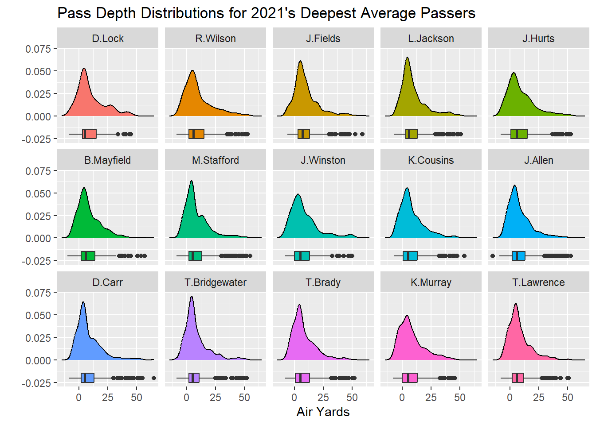
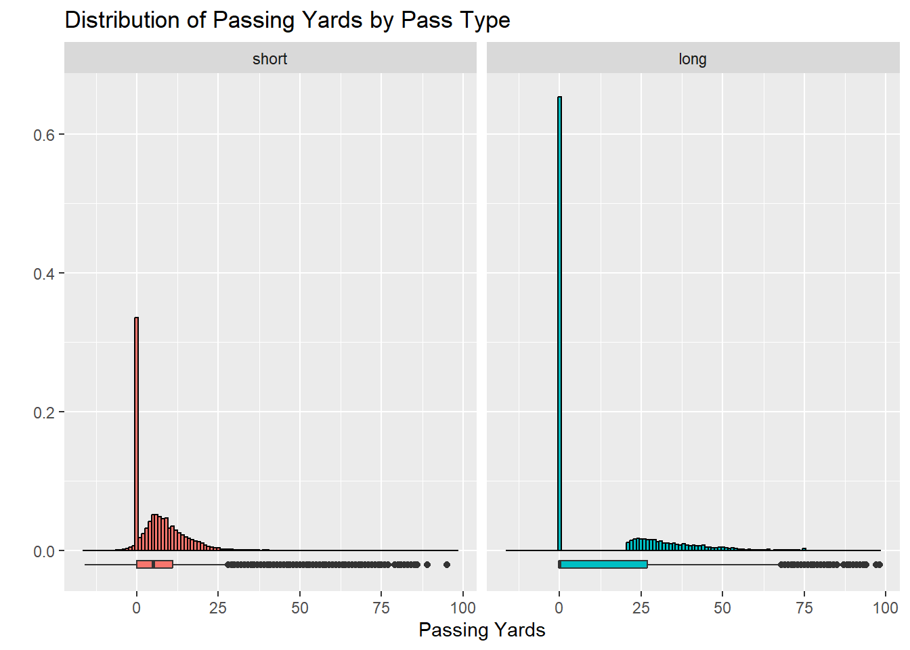
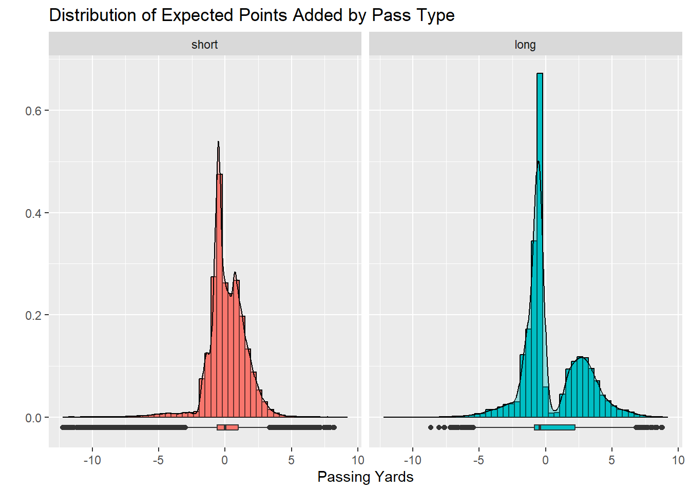
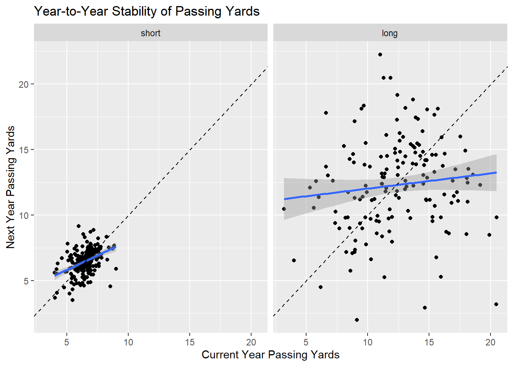
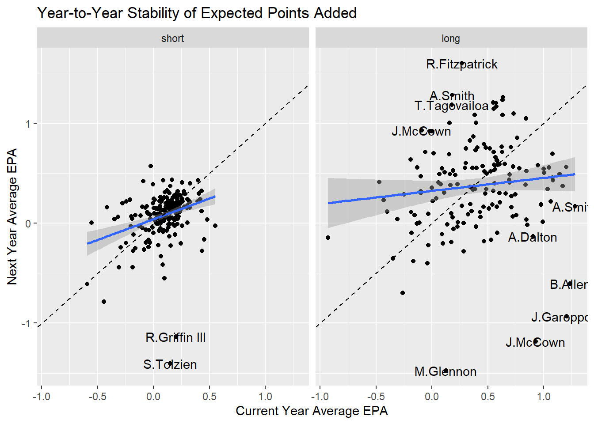
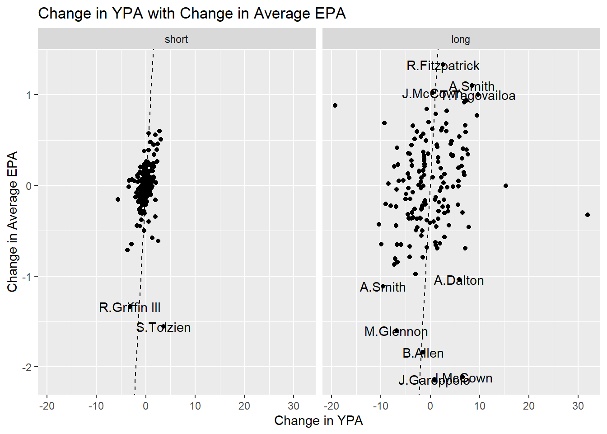
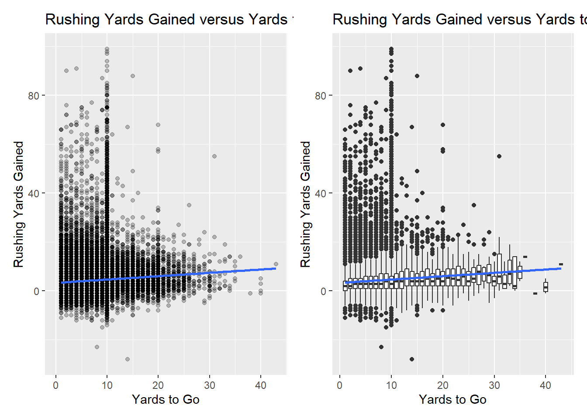
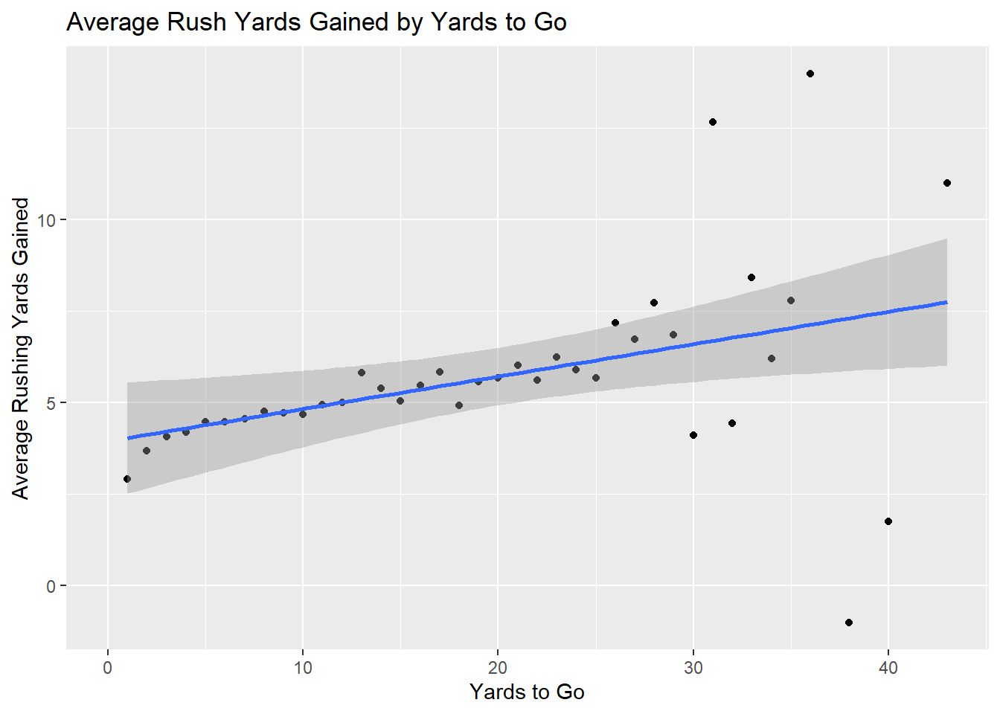
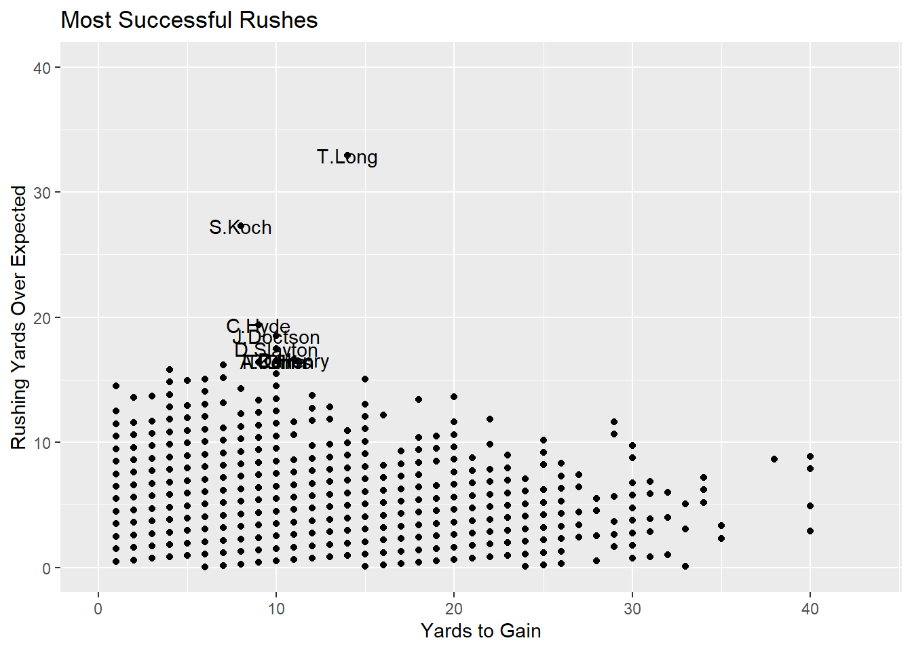

library(tidyverse)
library(kableExtra)
library(nflfastR)
library(patchwork)
library(tidymodels)Football Analytics
Introduction
This notebook contains sections corresponding to the textbook Football Analytics with Python & R, by Eric A. Eager and Richard A. Erickson. I include a subsection in this notebook for each chapter of the text, and include solutions to exercises as well as some explorations of different questions I thought may be interesting to explore.
Chapter 1: Football Analytics
This introductory chapter provides the reader an introduction to R and Python as well as to the {nflfastR} package in R (and the nfl_data_py Python module). I’ll be working through the textbook in R, since that is my preferred language.
We can load play-by-play data using the load_pbp() function from this package. I’ll load the data from the 2021 season, as shown in the textbook.
pbp_21 <- load_pbp(2021)
pbp_21 %>%
head(n = 2) %>%
kable() %>%
kable_styling(bootstrap_options = c("hover", "striped"))| play_id | game_id | old_game_id | home_team | away_team | season_type | week | posteam | posteam_type | defteam | side_of_field | yardline_100 | game_date | quarter_seconds_remaining | half_seconds_remaining | game_seconds_remaining | game_half | quarter_end | drive | sp | qtr | down | goal_to_go | time | yrdln | ydstogo | ydsnet | desc | play_type | yards_gained | shotgun | no_huddle | qb_dropback | qb_kneel | qb_spike | qb_scramble | pass_length | pass_location | air_yards | yards_after_catch | run_location | run_gap | field_goal_result | kick_distance | extra_point_result | two_point_conv_result | home_timeouts_remaining | away_timeouts_remaining | timeout | timeout_team | td_team | td_player_name | td_player_id | posteam_timeouts_remaining | defteam_timeouts_remaining | total_home_score | total_away_score | posteam_score | defteam_score | score_differential | posteam_score_post | defteam_score_post | score_differential_post | no_score_prob | opp_fg_prob | opp_safety_prob | opp_td_prob | fg_prob | safety_prob | td_prob | extra_point_prob | two_point_conversion_prob | ep | epa | total_home_epa | total_away_epa | total_home_rush_epa | total_away_rush_epa | total_home_pass_epa | total_away_pass_epa | air_epa | yac_epa | comp_air_epa | comp_yac_epa | total_home_comp_air_epa | total_away_comp_air_epa | total_home_comp_yac_epa | total_away_comp_yac_epa | total_home_raw_air_epa | total_away_raw_air_epa | total_home_raw_yac_epa | total_away_raw_yac_epa | wp | def_wp | home_wp | away_wp | wpa | vegas_wpa | vegas_home_wpa | home_wp_post | away_wp_post | vegas_wp | vegas_home_wp | total_home_rush_wpa | total_away_rush_wpa | total_home_pass_wpa | total_away_pass_wpa | air_wpa | yac_wpa | comp_air_wpa | comp_yac_wpa | total_home_comp_air_wpa | total_away_comp_air_wpa | total_home_comp_yac_wpa | total_away_comp_yac_wpa | total_home_raw_air_wpa | total_away_raw_air_wpa | total_home_raw_yac_wpa | total_away_raw_yac_wpa | punt_blocked | first_down_rush | first_down_pass | first_down_penalty | third_down_converted | third_down_failed | fourth_down_converted | fourth_down_failed | incomplete_pass | touchback | interception | punt_inside_twenty | punt_in_endzone | punt_out_of_bounds | punt_downed | punt_fair_catch | kickoff_inside_twenty | kickoff_in_endzone | kickoff_out_of_bounds | kickoff_downed | kickoff_fair_catch | fumble_forced | fumble_not_forced | fumble_out_of_bounds | solo_tackle | safety | penalty | tackled_for_loss | fumble_lost | own_kickoff_recovery | own_kickoff_recovery_td | qb_hit | rush_attempt | pass_attempt | sack | touchdown | pass_touchdown | rush_touchdown | return_touchdown | extra_point_attempt | two_point_attempt | field_goal_attempt | kickoff_attempt | punt_attempt | fumble | complete_pass | assist_tackle | lateral_reception | lateral_rush | lateral_return | lateral_recovery | passer_player_id | passer_player_name | passing_yards | receiver_player_id | receiver_player_name | receiving_yards | rusher_player_id | rusher_player_name | rushing_yards | lateral_receiver_player_id | lateral_receiver_player_name | lateral_receiving_yards | lateral_rusher_player_id | lateral_rusher_player_name | lateral_rushing_yards | lateral_sack_player_id | lateral_sack_player_name | interception_player_id | interception_player_name | lateral_interception_player_id | lateral_interception_player_name | punt_returner_player_id | punt_returner_player_name | lateral_punt_returner_player_id | lateral_punt_returner_player_name | kickoff_returner_player_name | kickoff_returner_player_id | lateral_kickoff_returner_player_id | lateral_kickoff_returner_player_name | punter_player_id | punter_player_name | kicker_player_name | kicker_player_id | own_kickoff_recovery_player_id | own_kickoff_recovery_player_name | blocked_player_id | blocked_player_name | tackle_for_loss_1_player_id | tackle_for_loss_1_player_name | tackle_for_loss_2_player_id | tackle_for_loss_2_player_name | qb_hit_1_player_id | qb_hit_1_player_name | qb_hit_2_player_id | qb_hit_2_player_name | forced_fumble_player_1_team | forced_fumble_player_1_player_id | forced_fumble_player_1_player_name | forced_fumble_player_2_team | forced_fumble_player_2_player_id | forced_fumble_player_2_player_name | solo_tackle_1_team | solo_tackle_2_team | solo_tackle_1_player_id | solo_tackle_2_player_id | solo_tackle_1_player_name | solo_tackle_2_player_name | assist_tackle_1_player_id | assist_tackle_1_player_name | assist_tackle_1_team | assist_tackle_2_player_id | assist_tackle_2_player_name | assist_tackle_2_team | assist_tackle_3_player_id | assist_tackle_3_player_name | assist_tackle_3_team | assist_tackle_4_player_id | assist_tackle_4_player_name | assist_tackle_4_team | tackle_with_assist | tackle_with_assist_1_player_id | tackle_with_assist_1_player_name | tackle_with_assist_1_team | tackle_with_assist_2_player_id | tackle_with_assist_2_player_name | tackle_with_assist_2_team | pass_defense_1_player_id | pass_defense_1_player_name | pass_defense_2_player_id | pass_defense_2_player_name | fumbled_1_team | fumbled_1_player_id | fumbled_1_player_name | fumbled_2_player_id | fumbled_2_player_name | fumbled_2_team | fumble_recovery_1_team | fumble_recovery_1_yards | fumble_recovery_1_player_id | fumble_recovery_1_player_name | fumble_recovery_2_team | fumble_recovery_2_yards | fumble_recovery_2_player_id | fumble_recovery_2_player_name | sack_player_id | sack_player_name | half_sack_1_player_id | half_sack_1_player_name | half_sack_2_player_id | half_sack_2_player_name | return_team | return_yards | penalty_team | penalty_player_id | penalty_player_name | penalty_yards | replay_or_challenge | replay_or_challenge_result | penalty_type | defensive_two_point_attempt | defensive_two_point_conv | defensive_extra_point_attempt | defensive_extra_point_conv | safety_player_name | safety_player_id | season | cp | cpoe | series | series_success | series_result | order_sequence | start_time | time_of_day | stadium | weather | nfl_api_id | play_clock | play_deleted | play_type_nfl | special_teams_play | st_play_type | end_clock_time | end_yard_line | fixed_drive | fixed_drive_result | drive_real_start_time | drive_play_count | drive_time_of_possession | drive_first_downs | drive_inside20 | drive_ended_with_score | drive_quarter_start | drive_quarter_end | drive_yards_penalized | drive_start_transition | drive_end_transition | drive_game_clock_start | drive_game_clock_end | drive_start_yard_line | drive_end_yard_line | drive_play_id_started | drive_play_id_ended | away_score | home_score | location | result | total | spread_line | total_line | div_game | roof | surface | temp | wind | home_coach | away_coach | stadium_id | game_stadium | aborted_play | success | passer | passer_jersey_number | rusher | rusher_jersey_number | receiver | receiver_jersey_number | pass | rush | first_down | special | play | passer_id | rusher_id | receiver_id | name | jersey_number | id | fantasy_player_name | fantasy_player_id | fantasy | fantasy_id | out_of_bounds | home_opening_kickoff | qb_epa | xyac_epa | xyac_mean_yardage | xyac_median_yardage | xyac_success | xyac_fd | xpass | pass_oe |
|---|---|---|---|---|---|---|---|---|---|---|---|---|---|---|---|---|---|---|---|---|---|---|---|---|---|---|---|---|---|---|---|---|---|---|---|---|---|---|---|---|---|---|---|---|---|---|---|---|---|---|---|---|---|---|---|---|---|---|---|---|---|---|---|---|---|---|---|---|---|---|---|---|---|---|---|---|---|---|---|---|---|---|---|---|---|---|---|---|---|---|---|---|---|---|---|---|---|---|---|---|---|---|---|---|---|---|---|---|---|---|---|---|---|---|---|---|---|---|---|---|---|---|---|---|---|---|---|---|---|---|---|---|---|---|---|---|---|---|---|---|---|---|---|---|---|---|---|---|---|---|---|---|---|---|---|---|---|---|---|---|---|---|---|---|---|---|---|---|---|---|---|---|---|---|---|---|---|---|---|---|---|---|---|---|---|---|---|---|---|---|---|---|---|---|---|---|---|---|---|---|---|---|---|---|---|---|---|---|---|---|---|---|---|---|---|---|---|---|---|---|---|---|---|---|---|---|---|---|---|---|---|---|---|---|---|---|---|---|---|---|---|---|---|---|---|---|---|---|---|---|---|---|---|---|---|---|---|---|---|---|---|---|---|---|---|---|---|---|---|---|---|---|---|---|---|---|---|---|---|---|---|---|---|---|---|---|---|---|---|---|---|---|---|---|---|---|---|---|---|---|---|---|---|---|---|---|---|---|---|---|---|---|---|---|---|---|---|---|---|---|---|---|---|---|---|---|---|---|---|---|---|---|---|---|---|---|---|---|---|---|---|---|---|---|---|---|---|---|---|---|---|---|---|---|---|---|---|---|---|---|---|---|---|---|---|---|---|---|---|---|---|
| 1 | 2021_01_ARI_TEN | 2021091207 | TEN | ARI | REG | 1 | NA | NA | NA | NA | NA | 2021-09-12 | 900 | 1800 | 3600 | Half1 | 0 | NA | 0 | 1 | NA | 0 | 15:00 | ARI 35 | 0 | NA | GAME | NA | NA | 0 | 0 | NA | 0 | 0 | 0 | NA | NA | NA | NA | NA | NA | NA | NA | NA | NA | 3 | 3 | NA | NA | NA | NA | NA | NA | NA | 0 | 0 | NA | NA | NA | NA | NA | NA | 0.0000000 | 0.000000 | 0.0000000 | 0.0000000 | 0.0000000 | 0.0000000 | 0.0000000 | 0 | 0 | 1.474098 | 0 | 0 | 0 | 0 | 0 | 0 | 0 | NA | NA | NA | NA | 0 | 0 | 0 | 0 | 0 | 0 | 0 | 0 | 0.5462618 | 0.4537382 | 0.5462618 | 0.4537382 | 0 | 0 | 0 | NA | NA | 0.5690569 | 0.5690569 | 0 | 0 | 0 | 0 | NA | NA | NA | NA | 0 | 0 | 0 | 0 | 0 | 0 | 0 | 0 | NA | NA | NA | NA | NA | NA | NA | NA | NA | 0 | NA | NA | NA | NA | NA | NA | NA | NA | NA | NA | NA | NA | NA | NA | NA | NA | NA | NA | NA | NA | NA | NA | NA | NA | NA | NA | NA | NA | NA | NA | NA | NA | NA | NA | NA | NA | NA | NA | NA | NA | NA | NA | NA | NA | NA | NA | NA | NA | NA | NA | NA | NA | NA | NA | NA | NA | NA | NA | NA | NA | NA | NA | NA | NA | NA | NA | NA | NA | NA | NA | NA | NA | NA | NA | NA | NA | NA | NA | NA | NA | NA | NA | NA | NA | NA | NA | NA | NA | NA | NA | NA | NA | NA | NA | NA | NA | NA | NA | NA | NA | NA | NA | NA | NA | NA | NA | NA | NA | NA | NA | NA | NA | NA | NA | NA | NA | NA | NA | NA | NA | NA | NA | NA | NA | NA | NA | NA | NA | NA | NA | NA | NA | NA | NA | NA | NA | NA | NA | NA | NA | NA | NA | NA | NA | NA | NA | NA | 0 | NA | NA | NA | NA | NA | NA | NA | NA | 2021 | NA | NA | 1 | 0 | Punt | 1 | 13:00:00 | NA | Nissan Stadium | Sunny Temp: 78° F, Humidity: 63%, Wind: SSW 6 mph | 10160000-0585-1194-5bd6-3e939eca6530 | 0 | 0 | GAME_START | 0 | NA | NA | NA | 1 | Punt | NA | NA | NA | NA | NA | NA | NA | NA | NA | NA | NA | NA | NA | NA | NA | NA | NA | 38 | 13 | Home | -25 | 51 | 2.5 | 54 | 0 | outdoors | grass | NA | NA | Mike Vrabel | Kliff Kingsbury | NAS00 | Nissan Stadium | 0 | 0 | NA | NA | NA | NA | NA | NA | 0 | 0 | NA | 0 | 0 | NA | NA | NA | NA | NA | NA | NA | NA | NA | NA | 0 | 1 | 0 | NA | NA | NA | NA | NA | NA | NA |
| 40 | 2021_01_ARI_TEN | 2021091207 | TEN | ARI | REG | 1 | TEN | home | ARI | ARI | 35 | 2021-09-12 | 900 | 1800 | 3600 | Half1 | 0 | 1 | 0 | 1 | NA | 0 | 15:00 | ARI 35 | 0 | 0 | 5-M.Prater kicks 65 yards from ARI 35 to end zone, Touchback. | kickoff | 0 | 0 | 0 | 0 | 0 | 0 | 0 | NA | NA | NA | NA | NA | NA | NA | NA | NA | NA | 3 | 3 | 0 | NA | NA | NA | NA | 3 | 3 | 0 | 0 | 0 | 0 | 0 | 0 | 0 | 0 | 0.0046605 | 0.144037 | 0.0020718 | 0.2260513 | 0.2126011 | 0.0038279 | 0.4067504 | 0 | 0 | 1.474098 | 0 | 0 | 0 | 0 | 0 | 0 | 0 | NA | NA | 0 | 0 | 0 | 0 | 0 | 0 | 0 | 0 | 0 | 0 | 0.5462618 | 0.4537382 | 0.5462618 | 0.4537382 | 0 | 0 | 0 | 0.5462618 | 0.4537382 | 0.5690569 | 0.5690569 | 0 | 0 | 0 | 0 | NA | NA | 0 | 0 | 0 | 0 | 0 | 0 | 0 | 0 | 0 | 0 | 0 | 0 | 0 | 0 | 0 | 0 | 0 | 0 | 0 | 1 | 0 | 0 | 0 | 0 | 0 | 0 | 0 | 0 | 0 | 0 | 0 | 0 | 0 | 0 | 0 | 0 | 0 | 0 | 0 | 0 | 0 | 0 | 0 | 0 | 0 | 0 | 0 | 0 | 0 | 0 | 0 | 0 | 1 | 0 | 0 | 0 | 0 | 0 | 0 | 0 | 0 | NA | NA | NA | NA | NA | NA | NA | NA | NA | NA | NA | NA | NA | NA | NA | NA | NA | NA | NA | NA | NA | NA | NA | NA | NA | NA | NA | NA | NA | NA | NA | M.Prater | 00-0023853 | NA | NA | NA | NA | NA | NA | NA | NA | NA | NA | NA | NA | NA | NA | NA | NA | NA | NA | NA | NA | NA | NA | NA | NA | NA | NA | NA | NA | NA | NA | NA | NA | NA | NA | NA | NA | 0 | NA | NA | NA | NA | NA | NA | NA | NA | NA | NA | NA | NA | NA | NA | NA | NA | NA | NA | NA | NA | NA | NA | NA | NA | NA | NA | NA | NA | NA | NA | TEN | 0 | NA | NA | NA | NA | 0 | NA | NA | 0 | 0 | 0 | 0 | NA | NA | 2021 | NA | NA | 1 | 0 | Punt | 40 | 13:00:00 | 17:05:55 | Nissan Stadium | Sunny Temp: 78° F, Humidity: 63%, Wind: SSW 6 mph | 10160000-0585-1194-5bd6-3e939eca6530 | 0 | 0 | KICK_OFF | 1 | NA | NA | TEN 25 | 1 | Punt | NA | 3 | 1:33 | 0 | 0 | 0 | 1 | 1 | 0 | KICKOFF | PUNT | 15:00 | 13:27 | TEN 25 | TEN 25 | 40 | 122 | 38 | 13 | Home | -25 | 51 | 2.5 | 54 | 0 | outdoors | grass | NA | NA | Mike Vrabel | Kliff Kingsbury | NAS00 | Nissan Stadium | 0 | 0 | NA | NA | NA | NA | NA | NA | 0 | 0 | 0 | 1 | 0 | NA | NA | NA | NA | NA | NA | NA | NA | NA | NA | 0 | 1 | 0 | NA | NA | NA | NA | NA | NA | NA |
This collection of play-by-play data from the 2021 season includes 50712 observations on 372 variables. The text guides us through a simple example of ranking quarterbacks by their level of agressivity, as defined by average pass depth (air_yards). In order to perform this analysis, we’ll filter to include only pass plays with recorded air_yards values. After computing the summary statistics, we filter out unknown passers and passers who attempted very few passes.
pbp_21 %>%
filter((play_type == "pass") & (!is.na(air_yards))) %>%
group_by(passer_id, passer) %>%
summarize(num_passes = n(), avg_depth_of_pass = mean(air_yards),
.groups = "drop") %>%
filter((num_passes >= 100) & (!is.na(passer))) %>%
arrange(-avg_depth_of_pass) %>%
kable() %>%
kable_styling(bootstrap_options = c("hover", "striped"))| passer_id | passer | num_passes | avg_depth_of_pass |
|---|---|---|---|
| 00-0035704 | D.Lock | 110 | 10.154545 |
| 00-0029263 | R.Wilson | 400 | 9.887500 |
| 00-0036945 | J.Fields | 268 | 9.835821 |
| 00-0034796 | L.Jackson | 378 | 9.341270 |
| 00-0036389 | J.Hurts | 473 | 9.190275 |
| 00-0034855 | B.Mayfield | 416 | 8.776442 |
| 00-0026498 | M.Stafford | 740 | 8.508108 |
| 00-0031503 | J.Winston | 161 | 8.322981 |
| 00-0029604 | K.Cousins | 556 | 8.228417 |
| 00-0034857 | J.Allen | 708 | 8.224576 |
| 00-0031280 | D.Carr | 676 | 8.128698 |
| 00-0031237 | T.Bridgewater | 426 | 8.037559 |
| 00-0019596 | T.Brady | 808 | 7.941832 |
| 00-0035228 | K.Murray | 515 | 7.941748 |
| 00-0036971 | T.Lawrence | 598 | 7.913043 |
| 00-0036972 | M.Jones | 557 | 7.901257 |
| 00-0033077 | D.Prescott | 638 | 7.811912 |
| 00-0036442 | J.Burrow | 659 | 7.745068 |
| 00-0023459 | A.Rodgers | 556 | 7.730216 |
| 00-0031800 | T.Heinicke | 491 | 7.692464 |
| 00-0035993 | T.Huntley | 185 | 7.675676 |
| 00-0032950 | C.Wentz | 516 | 7.641473 |
| 00-0029701 | R.Tannehill | 554 | 7.606498 |
| 00-0037013 | Z.Wilson | 382 | 7.565445 |
| 00-0036355 | J.Herbert | 671 | 7.554396 |
| 00-0033119 | J.Brissett | 224 | 7.549107 |
| 00-0033357 | T.Hill | 132 | 7.439394 |
| 00-0028118 | T.Taylor | 149 | 7.429530 |
| 00-0030520 | M.Glennon | 164 | 7.378049 |
| 00-0035710 | D.Jones | 360 | 7.344444 |
| 00-0036898 | D.Mills | 392 | 7.318878 |
| 00-0031345 | J.Garoppolo | 511 | 7.305284 |
| 00-0034869 | S.Darnold | 405 | 7.259259 |
| 00-0026143 | M.Ryan | 559 | 7.159213 |
| 00-0032156 | T.Siemian | 187 | 7.133690 |
| 00-0036212 | T.Tagovailoa | 387 | 7.103359 |
| 00-0033873 | P.Mahomes | 780 | 7.075641 |
| 00-0027973 | A.Dalton | 235 | 6.987234 |
| 00-0027939 | C.Newton | 126 | 6.968254 |
| 00-0022924 | B.Roethlisberger | 647 | 6.761978 |
| 00-0033106 | J.Goff | 489 | 6.441718 |
| 00-0034401 | M.White | 132 | 5.886364 |
The below plots show pass depth distributons for each of the top fifteen quarterbacks listed above.
deepest_passers <- pbp_21 %>%
filter((play_type == "pass") & (!is.na(air_yards))) %>%
group_by(passer_id, passer) %>%
summarize(num_passes = n(), avg_depth_of_pass = mean(air_yards),
.groups = "drop") %>%
filter((num_passes >= 100) & (!is.na(passer))) %>%
arrange(-avg_depth_of_pass) %>%
slice_max(avg_depth_of_pass, n = 15) %>%
pull(passer)
pbp_21 %>%
filter((play_type == "pass") & (!is.na(air_yards)) & (passer %in% deepest_passers)) %>%
mutate(passer = factor(passer, levels = deepest_passers)) %>%
ggplot() +
geom_density(aes(x = air_yards, fill = passer), show.legend = FALSE) +
geom_boxplot(aes(x = air_yards, y = -0.02, fill = passer), width = 0.01, show.legend = FALSE) +
facet_wrap(~passer, nrow = 3) +
labs(title = "Pass Depth Distributions for 2021's Deepest Average Passers",
x = "Air Yards",
y = "")
It is interesting how similar these distributions look. Drew Lock had the highest average air_depth but he also had the fewest total passes among this group. This means that those very few deep-ball outliers had greater influence on his average pass depth than the other quarterbacks who played more snaps.
Chapter 2: EDA through Stable Versus Unstable QB Stats
The authors include an interesting discussion on how players should be evaluated. Some statistical measures are relatively stable for players year-over-year, while others include more variability. This introduces the possibility for strategic trading on high-variability measures – we can sell-high and buy-low on players based on such performance measures if other teams are placing undue weight on these high-variance and unstable stats. For example, yards gained by a running back are not generally stable and neither are yards gained as a result of deep throws from a quarterback. Yards gained by short passes, however, are generally stable year-over-year. Let’s analyse some of these ideas.
In the text, the authors use EDA to explore the hypothesis: Throwing deep passes is more valuable than short passes, but it is difficult to say whether a quarterback is “good” at deep passes. Here, the variability comes in with the latter half of the hypothesis – determining whether a quarterback excels in deep passing is difficult because of the high variability in deep passing statistics year-over-year.
Since we are discussing year-over-year comparisons, we’ll need to load several seasons-worth of data. We’ll do that now.
pbp_16_21 <- load_pbp(2016:2021)We’ve got a lot more data to deal with now. Certainly, the number of features (variables) has stayed the same, but now we have 291550 observations across the six seasons. The authors justify looking at 2016 to 2021 because the beginning of the 2016 season was the last time a major rule change was implemented. A touchback on a kickoff resulted in starting from the 25 yard line rather than the 20 yard line. This rule change resulted in a change in kickoff strategy across the league, so analysing pre- and post-2016 data separately is justifiable.
Let’s take a look at year-over-year short and long pass results. We’ll use the air_yards variable to separate pass attempts into long (at least 20 yards) and short (less than 20 yards), and start with some simple numeric summaries, looking at *expected points added(epa`) by long/short pass plays.
pbp_16_21 %>%
filter(play_type == "pass",
!(is.na(air_yards))) %>%
mutate(passing_yards = ifelse(is.na(passing_yards), 0, passing_yards),
pass_type = ifelse(air_yards >= 20, "long", "short")) %>%
mutate(pass_type = factor(pass_type, levels = c("short", "long"))) %>%
group_by(pass_type) %>%
summarize(
min_epa = min(epa, na.rm = TRUE),
q1_epa = quantile(epa, 0.25, na.rm = TRUE),
med_epa = median(epa, na.rm = TRUE),
mean_epa = mean(epa, na.rm = TRUE),
q3_epa = quantile(epa, 0.75, na.rm = TRUE),
max_epa = max(epa, na.rm = TRUE),
iqr_epa = IQR(epa, na.rm = TRUE),
sd_epa = sd(epa, na.rm = TRUE),
missing_count = sum(is.na(epa)),
.groups = "drop"
) %>%
kable() %>%
kable_styling(bootstrap_options = c("hover", "striped"))| pass_type | min_epa | q1_epa | med_epa | mean_epa | q3_epa | max_epa | iqr_epa | sd_epa | missing_count |
|---|---|---|---|---|---|---|---|---|---|
| short | -12.21946 | -0.6050679 | 0.0030594 | 0.1229025 | 0.9638509 | 8.241420 | 1.568919 | 1.427852 | 1 |
| long | -10.47792 | -0.8196680 | -0.4601983 | 0.3960433 | 2.1613453 | 8.789744 | 2.981013 | 2.185827 | 0 |
We can see that expected points added has greater variation on long pass plays than it does on short pass plays.
We’ll build a plot to compare passing stats between pairs of consecutive years, investigating stability of passing_yards. Let’s start by simply drawing the distributions of passing yards resulting from long and short pass plays.
pbp_16_21 %>%
filter(play_type == "pass", !(is.na(air_yards))) %>%
mutate(pass_type = ifelse(air_yards > 20, "long", "short"),
passing_yards = ifelse(is.na(passing_yards), 0, passing_yards)) %>%
mutate(pass_type = factor(pass_type, levels = c("short", "long"))) %>%
ggplot() +
geom_histogram(aes(x = passing_yards, y = ..density.., fill = pass_type),
binwidth = 1, color = "black", show.legend = FALSE) +
#geom_density(aes(x = passing_yards, fill = pass_type),
# alpha = 0.4, show.legend = FALSE) +
geom_boxplot(aes(x = passing_yards, y = -0.02, fill = pass_type),
width = 0.01, show.legend = FALSE) +
labs(
title = "Distribution of Passing Yards by Pass Type",
x = "Passing Yards",
y = ""
) +
facet_wrap(~pass_type)Warning: The dot-dot notation (`..density..`) was deprecated in ggplot2 3.4.0.
ℹ Please use `after_stat(density)` instead.
We can see that lots of pass plays in general do not result in catches. Long passes, however, are much less likely to result in a completion. Interestingly, the distribution of passing yards on short passes, looks to be normally distributed when dropped balls are omitted.
Now that we have these insights, let’s take a look at the distributions of expected points added on these plays as well.
pbp_16_21 %>%
filter(play_type == "pass", !(is.na(air_yards))) %>%
mutate(pass_type = ifelse(air_yards > 20, "long", "short"),
passing_yards = ifelse(is.na(passing_yards), 0, passing_yards)) %>%
mutate(pass_type = factor(pass_type, levels = c("short", "long"))) %>%
ggplot() +
geom_histogram(aes(x = epa, y = ..density.., fill = pass_type),
bins = 50, color = "black", show.legend = FALSE) +
geom_density(aes(x = epa, fill = pass_type),
alpha = 0.4, show.legend = FALSE) +
geom_boxplot(aes(x = epa, y = -0.02, fill = pass_type),
width = 0.01, show.legend = FALSE) +
labs(
title = "Distribution of Expected Points Added by Pass Type",
x = "Passing Yards",
y = ""
) +
facet_wrap(~pass_type)Warning: Removed 1 rows containing non-finite values (`stat_bin()`).Warning: Removed 1 rows containing non-finite values (`stat_density()`).Warning: Removed 1 rows containing non-finite values (`stat_boxplot()`).
From the plots above, we again see that the long passes show greater variability in terms of expected points added. On average, the epa values here are lower than for short passes, however we do see that when long passes result in receptions [assumedly], the epa values are much greater.
Now let’s see whether average passing yards on short- and long- passing attemps are stable metrics year over year. We’ll remove passers that threw very few attempts in a season, since these often include non-QB players throwing passes on trick plays that may end up in very large gains.
pbp_16_21 %>%
filter(play_type == "pass", !(is.na(air_yards))) %>%
mutate(pass_type = ifelse(air_yards > 20, "long", "short"),
passing_yards = ifelse(is.na(passing_yards), 0, passing_yards)) %>%
group_by(passer_id, passer, season, pass_type) %>%
summarize(passing_attempts = n(),
avg_pass_yards = mean(passing_yards),
.groups = "drop") %>%
filter(passing_attempts >= 10) %>%
mutate(next_season = season + 1) %>%
inner_join(
pbp_16_21 %>%
filter(play_type == "pass", !(is.na(air_yards))) %>%
mutate(pass_type = ifelse(air_yards > 20, "long", "short"),
passing_yards = ifelse(is.na(passing_yards), 0, passing_yards)) %>%
group_by(passer_id, passer, season, pass_type) %>%
summarize(passing_attempts = n(),
avg_pass_yards = mean(passing_yards),
.groups = "drop") %>%
filter(passing_attempts >= 10),
by = c("passer_id" = "passer_id",
"passer" = "passer",
"next_season" = "season",
"pass_type" = "pass_type")
) %>%
rename(avg_pass_yards_curr = avg_pass_yards.x,
avg_pass_yards_next = avg_pass_yards.y) %>%
mutate(pass_type = factor(pass_type, levels = c("short", "long"))) %>%
ggplot() +
geom_point(aes(x = avg_pass_yards_curr, y = avg_pass_yards_next)) +
geom_smooth(aes(x = avg_pass_yards_curr, y = avg_pass_yards_next),
method = "lm") +
geom_abline(intercept = 0, slope = 1, linetype = "dashed") +
facet_wrap(~pass_type) +
labs(
title = "Year-to-Year Stability of Passing Yards",
x = "Current Year Passing Yards",
y = "Next Year Passing Yards"
)`geom_smooth()` using formula = 'y ~ x'
We can see that there is a positive correlation between year over year passing yards. That correlation looks to be stronger on short passes. Let’s see this numerically below.
pbp_16_21 %>%
filter(play_type == "pass", !(is.na(air_yards))) %>%
mutate(pass_type = ifelse(air_yards > 20, "long", "short"),
passing_yards = ifelse(is.na(passing_yards), 0, passing_yards)) %>%
group_by(passer_id, passer, season, pass_type) %>%
summarize(passing_attempts = n(),
avg_pass_yards = mean(passing_yards),
.groups = "drop") %>%
filter(passing_attempts >= 10) %>%
mutate(next_season = season + 1) %>%
inner_join(
pbp_16_21 %>%
filter(play_type == "pass", !(is.na(air_yards))) %>%
mutate(pass_type = ifelse(air_yards > 20, "long", "short"),
passing_yards = ifelse(is.na(passing_yards), 0, passing_yards)) %>%
group_by(passer_id, passer, season, pass_type) %>%
summarize(passing_attempts = n(),
avg_pass_yards = mean(passing_yards),
.groups = "drop") %>%
filter(passing_attempts >= 10),
by = c("passer_id" = "passer_id",
"passer" = "passer",
"next_season" = "season",
"pass_type" = "pass_type")
) %>%
rename(avg_pass_yards_curr = avg_pass_yards.x,
avg_pass_yards_next = avg_pass_yards.y) %>%
mutate(pass_type = factor(pass_type, levels = c("short", "long"))) %>%
group_by(pass_type) %>%
summarize(y2y_avg_pass_yards_correlation = cor(avg_pass_yards_curr, avg_pass_yards_next)) %>%
kable() %>%
kable_styling(bootstrap_options = c("hover", "striped"))| pass_type | y2y_avg_pass_yards_correlation |
|---|---|
| short | 0.4127077 |
| long | 0.1138190 |
Homework Exercises
The following are the exercises at the end of this chapter.
- Create histograms using
epa(Expected Points Added) per pass attempt.
I ended up doing this earlier in the notes section.
- Create boxplots using
epaper pass attempt.
I also ended up doing this earlier in the notes section.
- Perform the stability analysis for average
epaper pass attempt. Interpret the results. Do any players have similar yards per attempt year over year, but quite different EPA values? Where could this come from?
In the plot below, I’ll compare average EPA values for consecutive years. I’ll add player names to the plot in any cases where the average EPA for consecutive years differed by a full point or more.
pbp_16_21 %>%
filter(play_type == "pass", !(is.na(air_yards))) %>%
mutate(pass_type = ifelse(air_yards > 20, "long", "short")) %>%
group_by(passer_id, passer, season, pass_type) %>%
summarize(passing_attempts = n(),
avg_epa = mean(epa, na.rm = TRUE),
.groups = "drop") %>%
filter(passing_attempts >= 10) %>%
mutate(next_season = season + 1) %>%
inner_join(
pbp_16_21 %>%
filter(play_type == "pass", !(is.na(air_yards))) %>%
mutate(pass_type = ifelse(air_yards > 20, "long", "short")) %>%
group_by(passer_id, passer, season, pass_type) %>%
summarize(passing_attempts = n(),
avg_epa = mean(epa, na.rm = TRUE),
.groups = "drop") %>%
filter(passing_attempts >= 10),
by = c("passer_id" = "passer_id",
"passer" = "passer",
"next_season" = "season",
"pass_type" = "pass_type")
) %>%
rename(avg_epa_curr = avg_epa.x,
avg_epa_next = avg_epa.y) %>%
mutate(pass_type = factor(pass_type, levels = c("short", "long"))) %>%
ggplot() +
geom_point(aes(x = avg_epa_curr, y = avg_epa_next)) +
geom_smooth(aes(x = avg_epa_curr, y = avg_epa_next),
method = "lm") +
geom_text(aes(x = avg_epa_curr, y = avg_epa_next, label = ifelse(abs(avg_epa_curr - avg_epa_next) > 1, passer, ""))) +
geom_abline(intercept = 0, slope = 1, linetype = "dashed") +
facet_wrap(~pass_type) +
labs(
title = "Year-to-Year Stability of Expected Points Added",
x = "Current Year Average EPA",
y = "Next Year Average EPA"
)`geom_smooth()` using formula = 'y ~ x'
Similar to what we did with the year-over-year passing yards, we’ll compute the correlation between consecutive year average EPA per pass attempt for long and short passes.
pbp_16_21 %>%
filter(play_type == "pass", !(is.na(air_yards))) %>%
mutate(pass_type = ifelse(air_yards > 20, "long", "short")) %>%
group_by(passer_id, passer, season, pass_type) %>%
summarize(passing_attempts = n(),
avg_epa = mean(epa, na.rm = TRUE),
.groups = "drop") %>%
filter(passing_attempts >= 10) %>%
mutate(next_season = season + 1) %>%
inner_join(
pbp_16_21 %>%
filter(play_type == "pass", !(is.na(air_yards))) %>%
mutate(pass_type = ifelse(air_yards > 20, "long", "short")) %>%
group_by(passer_id, passer, season, pass_type) %>%
summarize(passing_attempts = n(),
avg_epa = mean(epa, na.rm = TRUE),
.groups = "drop") %>%
filter(passing_attempts >= 10),
by = c("passer_id" = "passer_id",
"passer" = "passer",
"next_season" = "season",
"pass_type" = "pass_type")
) %>%
rename(avg_epa_curr = avg_epa.x,
avg_epa_next = avg_epa.y) %>%
mutate(pass_type = factor(pass_type, levels = c("short", "long"))) %>%
group_by(pass_type) %>%
summarize(y2y_avg_epa_correlation = cor(avg_epa_curr, avg_epa_next)) %>%
kable() %>%
kable_styling(bootstrap_options = c("hover", "striped"))| pass_type | y2y_avg_epa_correlation |
|---|---|
| short | 0.3209213 |
| long | 0.1147228 |
The correlation here is still stronger for short passes than long pass attempts. To answer the remaining question about players with stable YPA values, but unstable EPA values, I’ll compute the change in YPA over consecutive years and do the same with the change in EPA per attempt over consecutive years. Then I’ll plot the results and identify players far from the 45-degree diagonal.
pbp_16_21 %>%
filter(play_type == "pass", !(is.na(air_yards))) %>%
mutate(pass_type = ifelse(air_yards > 20, "long", "short")) %>%
group_by(passer_id, passer, season, pass_type) %>%
summarize(passing_attempts = n(),
ypa = mean(passing_yards, na.rm = TRUE),
avg_epa = mean(epa, na.rm = TRUE),
.groups = "drop") %>%
filter(passing_attempts >= 10) %>%
mutate(next_season = season + 1) %>%
inner_join(
pbp_16_21 %>%
filter(play_type == "pass", !(is.na(air_yards))) %>%
mutate(pass_type = ifelse(air_yards > 20, "long", "short")) %>%
group_by(passer_id, passer, season, pass_type) %>%
summarize(passing_attempts = n(),
ypa = mean(passing_yards, na.rm = TRUE),
avg_epa = mean(epa, na.rm = TRUE),
.groups = "drop") %>%
filter(passing_attempts >= 10),
by = c("passer_id" = "passer_id",
"passer" = "passer",
"next_season" = "season",
"pass_type" = "pass_type")
) %>%
rename(ypa_curr = ypa.x,
ypa_next = ypa.y,
avg_epa_curr = avg_epa.x,
avg_epa_next = avg_epa.y) %>%
mutate(ypa_delta = ypa_next - ypa_curr,
avg_epa_delta = avg_epa_next - avg_epa_curr) %>%
mutate(pass_type = factor(pass_type, levels = c("short", "long"))) %>%
ggplot() +
geom_point(aes(x = ypa_delta, y = avg_epa_delta)) +
geom_text(aes(x = ypa_delta, y = avg_epa_delta, label = ifelse(abs(avg_epa_delta) > 1, passer, ""))) +
geom_abline(intercept = 0, slope = 1, linetype = "dashed") +
facet_wrap(~pass_type) +
labs(
title = "Change in YPA with Change in Average EPA",
x = "Change in YPA",
y = "Change in Average EPA"
)
WIth the exception of Tua, these look like players who have switched teams fairly often throughout their careers. A switch in team means a switch in coaching staff and strategy. We could plot the year in addition to the player name and then check on this hypothesis if we wanted.
- Find a cutoff that equally splits the data between long and short pass attempts and then re-run the analysis.
I’m not going to repeat the analysis right now, but we can find the median pass attempt length to determine a more equitable cutoff than 20 yards for
air_yards. That cutoff would be about 5.
Chapter 3: Linear Regression and Rushing Yards Over Expected
We’ll continue with the 2016 - 2021 play-by-play data in this chapter. Here, however, we’ll focus on rushing yards. The main ideas presented are quite interesting – basically, not all rushes are created equally. If a rusher gains 6 yards, when 8 are needed, then they did not achieve their objective. However, if a rusher gains 2 yards on a 3rd and 1, then that rusher has done their job and the play was successful. We need ways to assess the quality of a play, while controlling for the current game conditions – for example, down and yards to go.
Let’s start by looking at the relationship between yards to gain (yards to a first down or touchdown) and the rushing yards gained on a running play.
pbp_16_21 %>%
count(play_type)── nflverse play by play data ──────────────────────────────────────────────────ℹ Data updated: 2022-09-27 07:35:02 EDT# A tibble: 10 × 2
play_type n
<chr> <int>
1 extra_point 7701
2 field_goal 6214
3 kickoff 16684
4 no_play 27107
5 pass 120804
6 punt 13712
7 qb_kneel 2502
8 qb_spike 447
9 run 83301
10 <NA> 13078p1 <- pbp_16_21 %>%
filter(play_type == "run") %>%
ggplot() +
geom_point(aes(x = ydstogo, y = rushing_yards), alpha = 0.25) +
geom_smooth(aes(x = ydstogo, y = rushing_yards), method = "lm") +
labs(title = "Rushing Yards Gained versus Yards to Go",
x = "Yards to Go",
y = "Rushing Yards Gained")
p2 <- pbp_16_21 %>%
filter(play_type == "run") %>%
ggplot() +
geom_boxplot(aes(x = ydstogo, y = rushing_yards, group = ydstogo)) +
geom_smooth(aes(x = ydstogo, y = rushing_yards), method = "lm") +
labs(title = "Rushing Yards Gained versus Yards to Go",
x = "Yards to Go",
y = "Rushing Yards Gained")
p1 + p2`geom_smooth()` using formula = 'y ~ x'Warning: Removed 202 rows containing non-finite values (`stat_smooth()`).Warning: Removed 202 rows containing missing values (`geom_point()`).Warning: Removed 202 rows containing non-finite values (`stat_boxplot()`).`geom_smooth()` using formula = 'y ~ x'Warning: Removed 202 rows containing non-finite values (`stat_smooth()`).
This is really noisy data. Let’s see if we can get some better insight by averaging the number of rushing yards gained at each yards-to-go threshold.
pbp_16_21 %>%
filter(play_type == "run") %>%
group_by(ydstogo) %>%
summarize(avg_rush_gain = mean(rushing_yards)) %>%
ggplot() +
geom_point(aes(x = ydstogo, y = avg_rush_gain)) +
geom_smooth(aes(x = ydstogo, y = avg_rush_gain), method = "lm") +
labs(title = "Average Rush Yards Gained by Yards to Go",
x = "Yards to Go",
y = "Average Rushing Yards Gained")`geom_smooth()` using formula = 'y ~ x'Warning: Removed 1 rows containing non-finite values (`stat_smooth()`).Warning: Removed 1 rows containing missing values (`geom_point()`).
Let’s build and analyse a simple linear regression model to predict rushing yards gained, by the current yards to go.
lin_reg_spec <- linear_reg() %>%
set_engine("lm")
lin_reg_rec <- recipe(rushing_yards ~ ydstogo, data = pbp_16_21)
lin_reg_wf <- workflow() %>%
add_model(lin_reg_spec) %>%
add_recipe(lin_reg_rec)
lin_reg_fit <- lin_reg_wf %>%
fit(pbp_16_21)Now that we have a fitted model, we can see the global model utility metrics below.
lin_reg_fit %>%
glance() %>%
kable() %>%
kable_styling(bootstrap_options = c("hover", "striped"))| r.squared | adj.r.squared | sigma | statistic | p.value | df | logLik | AIC | BIC | deviance | df.residual | nobs |
|---|---|---|---|---|---|---|---|---|---|---|---|
| 0.0048077 | 0.0047961 | 6.284397 | 413.5224 | 0 | 1 | -278802.2 | 557610.4 | 557638.4 | 3380617 | 85599 | 85601 |
Similarly, we can see the statistical measures on the individual model terms below as well.
lin_reg_fit %>%
extract_fit_engine() %>%
tidy()# A tibble: 2 × 5
term estimate std.error statistic p.value
<chr> <dbl> <dbl> <dbl> <dbl>
1 (Intercept) 3.37 0.0500 67.3 0
2 ydstogo 0.113 0.00555 20.3 1.03e-91We can now use our model to obtain residuals and explore Rushing Yards Over Expected (RYOE).
lin_reg_fit %>%
augment(
pbp_16_21 %>%
filter(play_type == "run") %>%
select(rusher, ydstogo, rushing_yards)
) %>%
mutate(RYOE = .pred - rushing_yards) %>%
ggplot() +
geom_point(aes(x = ydstogo, y = RYOE)) +
geom_text(aes(x = ydstogo, y = RYOE, label = ifelse(RYOE > quantile(RYOE, 0.9999, na.rm = TRUE), rusher, ""))) +
ylim(c(0, 40)) +
labs(title = "Most Successful Rushes",
x = "Yards to Gain",
y = "Rushing Yards Over Expected")Warning: Removed 31358 rows containing missing values (`geom_point()`).Warning: Removed 31358 rows containing missing values (`geom_text()`).
Notice that those rushes which are longer than expected seemed to occur on yardages typically thought of as throwing situations. These were relatively long-yardage scenarios.
Let’s dive deeper into RYOE, and understand which players had the highest average RYOE in each season. We’ll then determine the stability of the RYOE metric from one year to the next, similarly to the way we determined the stability of passing yards on short- and long- passes in the previous chapter.
lin_reg_fit %>%
augment(
pbp_16_21 %>%
filter(play_type == "run", !is.na(rusher)) %>%
select(rusher_id, rusher, season, ydstogo, rushing_yards) %>%
mutate(rushing_yards = ifelse(is.na(rushing_yards), 0, rushing_yards))
) %>%
rename(expected_yards = .pred) %>%
mutate(ryoe = rushing_yards - expected_yards) %>%
group_by(rusher_id, rusher, season) %>%
summarize(
runs = n(),
avg_ryoe = mean(ryoe),
avg_rush_yards = mean(rushing_yards),
total_ryoe = sum(ryoe),
total_rush_yards = sum(rushing_yards),
.groups = "drop"
) %>%
filter(runs >= 50) %>%
arrange(-avg_ryoe) %>%
head(n = 20) %>%
kable() %>%
kable_styling(bootstrap_options = c("hover", "striped"))| rusher_id | rusher | season | runs | avg_ryoe | avg_rush_yards | total_ryoe | total_rush_yards |
|---|---|---|---|---|---|---|---|
| 00-0034796 | L.Jackson | 2019 | 135 | 2.614955 | 6.800000 | 353.01890 | 918 |
| 00-0035228 | K.Murray | 2019 | 56 | 2.190601 | 6.500000 | 122.67367 | 364 |
| 00-0034796 | L.Jackson | 2020 | 121 | 2.060473 | 6.264463 | 249.31724 | 758 |
| 00-0034750 | R.Penny | 2021 | 119 | 1.949996 | 6.294118 | 232.04957 | 749 |
| 00-0034253 | D.Hilliard | 2021 | 56 | 1.833827 | 6.250000 | 102.69430 | 350 |
| 00-0034400 | J.Wilkins | 2019 | 51 | 1.735214 | 6.019608 | 88.49591 | 307 |
| 00-0027939 | C.Newton | 2017 | 99 | 1.600412 | 5.757576 | 158.44081 | 570 |
| 00-0030433 | M.Gillislee | 2016 | 101 | 1.527760 | 5.712871 | 154.30375 | 577 |
| 00-0035719 | D.Samuel | 2021 | 86 | 1.513615 | 5.837209 | 130.17085 | 502 |
| 00-0031687 | R.Mostert | 2019 | 190 | 1.503455 | 5.831579 | 285.65642 | 1108 |
| 00-0036158 | J.Dobbins | 2020 | 154 | 1.495646 | 5.779221 | 230.32942 | 890 |
| 00-0035228 | K.Murray | 2020 | 75 | 1.454345 | 5.560000 | 109.07590 | 417 |
| 00-0034750 | R.Penny | 2019 | 65 | 1.429865 | 5.692308 | 92.94121 | 370 |
| 00-0034845 | S.Michel | 2020 | 79 | 1.426704 | 5.683544 | 112.70960 | 449 |
| 00-0034400 | J.Wilkins | 2018 | 62 | 1.346165 | 5.564516 | 83.46221 | 345 |
| 00-0034857 | J.Allen | 2021 | 80 | 1.330091 | 5.337500 | 106.40730 | 427 |
| 00-0033906 | A.Kamara | 2017 | 142 | 1.307716 | 5.591549 | 185.69569 | 794 |
| 00-0033293 | A.Jones | 2020 | 222 | 1.303468 | 5.540540 | 289.36990 | 1230 |
| 00-0033293 | A.Jones | 2017 | 81 | 1.295956 | 5.530864 | 104.97245 | 448 |
| 00-0033025 | J.Richard | 2016 | 86 | 1.277601 | 5.744186 | 109.87367 | 494 |
As in the textbook, we see several Quarterbacks at the top of the list. In particular, Lamar Jackson had several great seasons, as measured by RYOE. This is part of what led to him being given an enormous contract in 2023.
If we arrange rushers by total_ryoe rather than avg_ryoe, we see the following results.
lin_reg_fit %>%
augment(
pbp_16_21 %>%
filter(play_type == "run", !is.na(rusher)) %>%
select(rusher_id, rusher, season, ydstogo, rushing_yards) %>%
mutate(rushing_yards = ifelse(is.na(rushing_yards), 0, rushing_yards))
) %>%
rename(expected_yards = .pred) %>%
mutate(ryoe = rushing_yards - expected_yards) %>%
group_by(rusher_id, rusher, season) %>%
summarize(
runs = n(),
avg_ryoe = mean(ryoe),
avg_rush_yards = mean(rushing_yards),
total_ryoe = sum(ryoe),
total_rush_yards = sum(rushing_yards),
.groups = "drop"
) %>%
filter(runs >= 50) %>%
arrange(-total_ryoe) %>%
head(n = 20) %>%
kable() %>%
kable_styling(bootstrap_options = c("hover", "striped"))| rusher_id | rusher | season | runs | avg_ryoe | avg_rush_yards | total_ryoe | total_rush_yards |
|---|---|---|---|---|---|---|---|
| 00-0036223 | J.Taylor | 2021 | 332 | 1.2553987 | 5.454819 | 416.7924 | 1811 |
| 00-0032764 | D.Henry | 2020 | 397 | 0.9260500 | 5.206549 | 367.6419 | 2067 |
| 00-0034796 | L.Jackson | 2019 | 135 | 2.6149548 | 6.800000 | 353.0189 | 918 |
| 00-0032764 | D.Henry | 2019 | 387 | 0.8495839 | 5.131783 | 328.7890 | 1986 |
| 00-0033293 | A.Jones | 2020 | 222 | 1.3034680 | 5.540540 | 289.3699 | 1230 |
| 00-0031687 | R.Mostert | 2019 | 190 | 1.5034548 | 5.831579 | 285.6564 | 1108 |
| 00-0033045 | E.Elliott | 2016 | 344 | 0.8223793 | 5.104651 | 282.8985 | 1756 |
| 00-0034791 | N.Chubb | 2021 | 228 | 1.2250781 | 5.521930 | 279.3178 | 1259 |
| 00-0034791 | N.Chubb | 2020 | 221 | 1.1657052 | 5.475113 | 257.6208 | 1210 |
| 00-0034796 | L.Jackson | 2020 | 121 | 2.0604730 | 6.264463 | 249.3172 | 758 |
| 00-0027029 | L.McCoy | 2016 | 235 | 0.9902672 | 5.391489 | 232.7128 | 1267 |
| 00-0034750 | R.Penny | 2021 | 119 | 1.9499964 | 6.294118 | 232.0496 | 749 |
| 00-0036158 | J.Dobbins | 2020 | 154 | 1.4956456 | 5.779221 | 230.3294 | 890 |
| 00-0032780 | J.Howard | 2016 | 252 | 0.9100963 | 5.210318 | 229.3443 | 1313 |
| 00-0030496 | L.Bell | 2016 | 326 | 0.7010829 | 4.984663 | 228.5530 | 1625 |
| 00-0033893 | D.Cook | 2020 | 315 | 0.6975229 | 4.942857 | 219.7197 | 1557 |
| 00-0034791 | N.Chubb | 2019 | 298 | 0.6938428 | 5.013423 | 206.7651 | 1494 |
| 00-0034109 | P.Lindsay | 2018 | 193 | 1.0563408 | 5.373057 | 203.8738 | 1037 |
| 00-0033906 | A.Kamara | 2017 | 142 | 1.3077161 | 5.591549 | 185.6957 | 794 |
| 00-0036223 | J.Taylor | 2020 | 254 | 0.6942925 | 4.909449 | 176.3503 | 1247 |
Again, like the text, we see Jonathan Taylor and Derrick Henry topping this list.
Now let’s see whether avg_ryoe and total_ryoe are stable metrics from one year to the next.
rush_stats_16_21 <- lin_reg_fit %>%
augment(
pbp_16_21 %>%
filter(play_type == "run", !is.na(rusher)) %>%
select(rusher_id, rusher, season, ydstogo, rushing_yards) %>%
mutate(rushing_yards = ifelse(is.na(rushing_yards), 0, rushing_yards))
) %>%
rename(expected_yards = .pred) %>%
mutate(ryoe = rushing_yards - expected_yards) %>%
group_by(rusher_id, rusher, season) %>%
summarize(
runs = n(),
avg_ryoe = mean(ryoe),
avg_rush_yards = mean(rushing_yards),
total_ryoe = sum(ryoe),
total_rush_yards = sum(rushing_yards),
.groups = "drop"
) %>%
filter(runs > 50) %>%
mutate(next_season = season + 1) %>%
select(rusher_id, rusher, season, next_season, runs, avg_ryoe,
avg_rush_yards, total_ryoe, total_rush_yards)
rush_stats_16_21 %>%
select(-season) %>%
inner_join(
rush_stats_16_21 %>%
select(-next_season),
by = c("rusher_id" = "rusher_id", "rusher" = "rusher", "next_season" = "season")
) %>%
summarize(
rushes = cor(runs.x, runs.y),
avg_ryoe = cor(avg_ryoe.x, avg_ryoe.y),
avg_rush_yds = cor(avg_rush_yards.x, avg_rush_yards.y),
total_ryoe = cor(total_ryoe.x, total_ryoe.y),
total_rush_yds = cor(total_rush_yards.x, total_rush_yards.y)
) %>%
pivot_longer(cols = everything(), names_to = "metric", values_to = "y2y_correlation") %>%
arrange(-y2y_correlation) %>%
kable() %>%
kable_styling(bootstrap_options = c("hover", "striped"))| metric | y2y_correlation |
|---|---|
| rushes | 0.5714508 |
| total_rush_yds | 0.5673598 |
| avg_ryoe | 0.3447669 |
| total_ryoe | 0.3349978 |
| avg_rush_yds | 0.3242970 |
Notice that total_rush_yds, and total_ryoe are difficult to interpret because volume is a masked variable in both of these measures. These metrics actually measure two things – the frequency of run attempts and the length of each run. We aren’t reproducing the exact numbers from the textbook here. I’m wondering if that is due to stat updates, or if my code is not identical to the code found in the text.
Exercises
- What happens if you repeat the correlation analysis, but use 100 rushes per season as the threshold rather than 50? Are the takeaways regarding stability the same?
rush_stats_16_21 <- lin_reg_fit %>%
augment(
pbp_16_21 %>%
filter(play_type == "run", !is.na(rusher)) %>%
select(rusher_id, rusher, season, ydstogo, rushing_yards) %>%
mutate(rushing_yards = ifelse(is.na(rushing_yards), 0, rushing_yards))
) %>%
rename(expected_yards = .pred) %>%
mutate(ryoe = rushing_yards - expected_yards) %>%
group_by(rusher_id, rusher, season) %>%
summarize(
runs = n(),
avg_ryoe = mean(ryoe),
avg_rush_yards = mean(rushing_yards),
total_ryoe = sum(ryoe),
total_rush_yards = sum(rushing_yards),
.groups = "drop"
) %>%
filter(runs > 100) %>%
mutate(next_season = season + 1) %>%
select(rusher_id, rusher, season, next_season, runs, avg_ryoe,
avg_rush_yards, total_ryoe, total_rush_yards)
rush_stats_16_21 %>%
select(-season) %>%
inner_join(
rush_stats_16_21 %>%
select(-next_season),
by = c("rusher_id" = "rusher_id", "rusher" = "rusher", "next_season" = "season")
) %>%
summarize(
rushes = cor(runs.x, runs.y),
avg_ryoe = cor(avg_ryoe.x, avg_ryoe.y),
avg_rush_yds = cor(avg_rush_yards.x, avg_rush_yards.y),
total_ryoe = cor(total_ryoe.x, total_ryoe.y),
total_rush_yds = cor(total_rush_yards.x, total_rush_yards.y)
) %>%
pivot_longer(cols = everything(), names_to = "metric", values_to = "y2y_correlation") %>%
arrange(-y2y_correlation) %>%
kable() %>%
kable_styling(bootstrap_options = c("hover", "striped"))| metric | y2y_correlation |
|---|---|
| total_rush_yds | 0.3965560 |
| rushes | 0.3902246 |
| avg_ryoe | 0.3872270 |
| avg_rush_yds | 0.3715146 |
| total_ryoe | 0.3466021 |
We do see that
avg_ryoeis still a more stable measure thanavg_rush_ydsfrom one year to the next. The different in correlations is similar – about \(0.016\) versus \(0.013\) – although, this is about a 23% increase in the difference. Interestingly, we see that the correlation between total runs and total rush yards from year to year has dropped significantly. This indicates that dominant rushers (rushers getting lots of carries) don’t generally hold over from one year to the next. This could be due to wear and tear on the position.
- Assume that all of Mike Alstott’s carries were on 3rd and 1 situations, while all Warrick Dunn’s carries were on 1st and 10s. Is situation alone enough to explain the difference between the yards per carry for these two players (3.7 yards per carry versus 4.0 yards per carry)?
lin_reg_fit %>%
extract_fit_engine() %>%
tidy() %>%
kable() %>%
kable_styling(bootstrap_options = c("hover", "striped"))| term | estimate | std.error | statistic | p.value |
|---|---|---|---|---|
| (Intercept) | 3.3685760 | 0.0500332 | 67.32679 | 0 |
| ydstogo | 0.1128182 | 0.0055479 | 20.33525 | 0 |
Notice that the coefficient on yards to go in the regression model is about 0.113. If we multiply this by 9 (the difference in the assumed yards to go measures), we expect a difference of about a full yard (in terms of expected rushing yards). This would be more than enough to explain the difference in yards per carry for these two backs.
- What happens if you repeat the analyses in the chapter with yards to the endzone (
yard_line_100) rather than yards to gain?
I’m omitting this for now, but it should be simple to do.
- Conduct an analysis analogous to the one in this chapter, but for receivers and the passing game.
Again, I’m omitting for now, but it should be easy to conduct.
Chapter 4: Multiple Linear Regression and Rushing Yards Over Expected, Revisited
In Chapter 3, we controlled for just a single variable. However, the result of a rushing play is almost surely to depend on more than simply the yards to gain. For example, A 2nd and 1 is a very different play than a 4th and 1. In the former, the defense may expect a long passing play and needs to defend against that, while in the latter, it is much more likely that the offense will simply try to reach the line to gain and so defenses in these situations are defending primarily against short plays.
In this chapter, we’ll build our regression model to control for more gameplay scenarios.